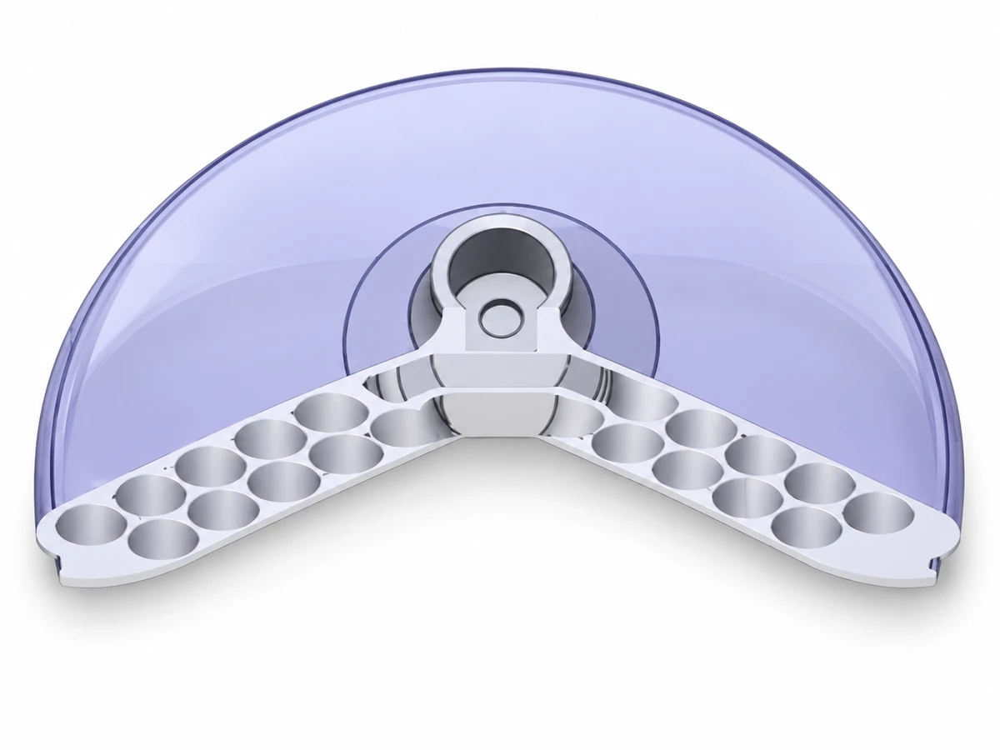

Explorer une approche biomimétique de l’écoute acoustique.

Rendu illustratif à partir du modèle du projet.Le besoin
Explorer une approche biomimétique de l’écoute acoustique.
Le principe
Stéthoscope passif biomimétique inspiré de la cochlée humaine, explorant une approche acoustique appliquée à l’écoute des sons corporels.
La documentation
Présentation du projet disponible ; détail de fabrication et preuves d’essais à compléter.
Besoin et contraintes
Ce stéthoscope passif s’inspire de la cochlée humaine pour l’écoute des sons corporels.
Conception et architecture
Le principe décrit est une approche acoustique passive biomimétique. La géométrie interne, les matériaux et les choix de fabrication ne sont pas détaillés ici.
Réalisation et intégration
Le visuel présente le dispositif. Les étapes de réalisation des pièces acoustiques, de finition et d’assemblage restent à documenter.
Essais et validation
Les protocoles, les conditions de mesure et les résultats d’essais ne sont pas documentés dans cette fiche.
Résultat et prochaines étapes
Stéthoscope passif biomimétique inspiré de la cochlée humaine, explorant une approche acoustique appliquée à l’écoute des sons corporels.